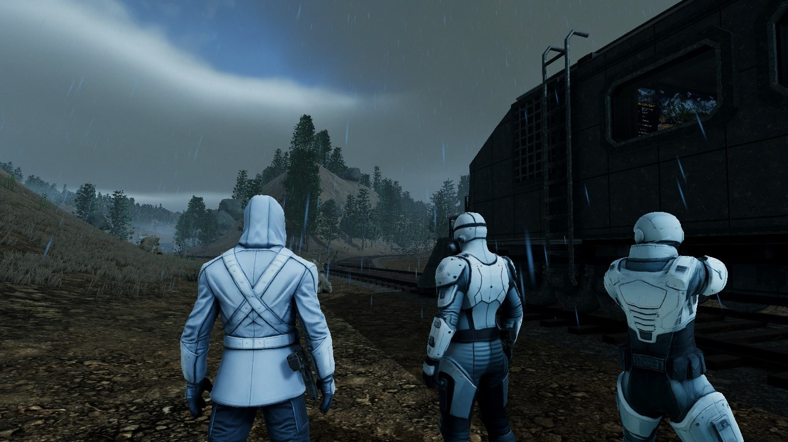
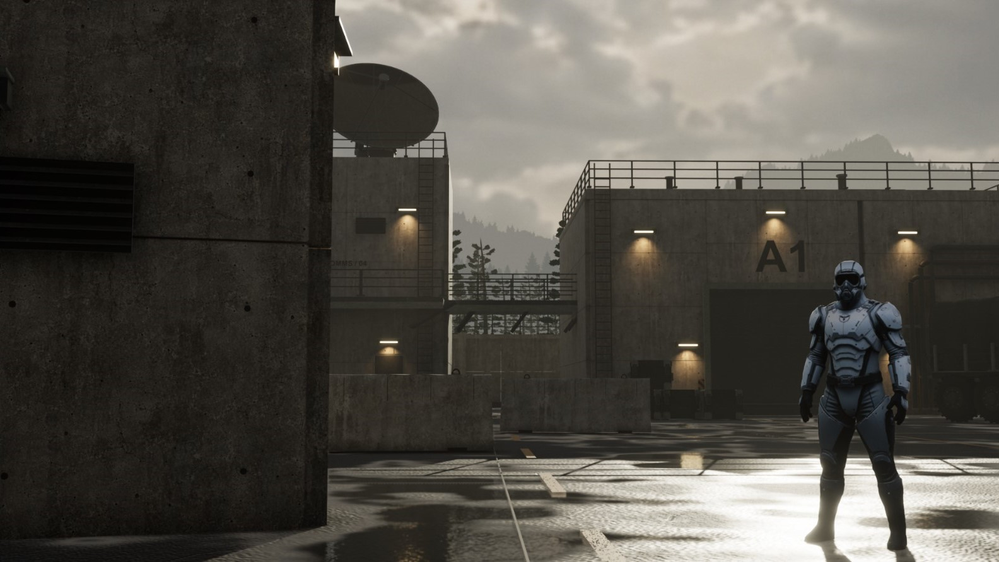
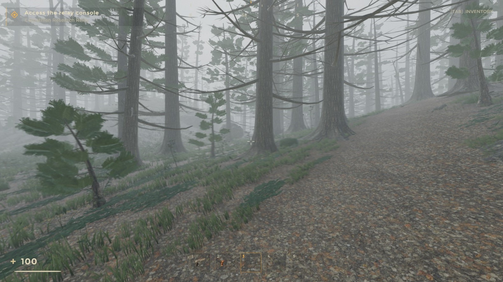
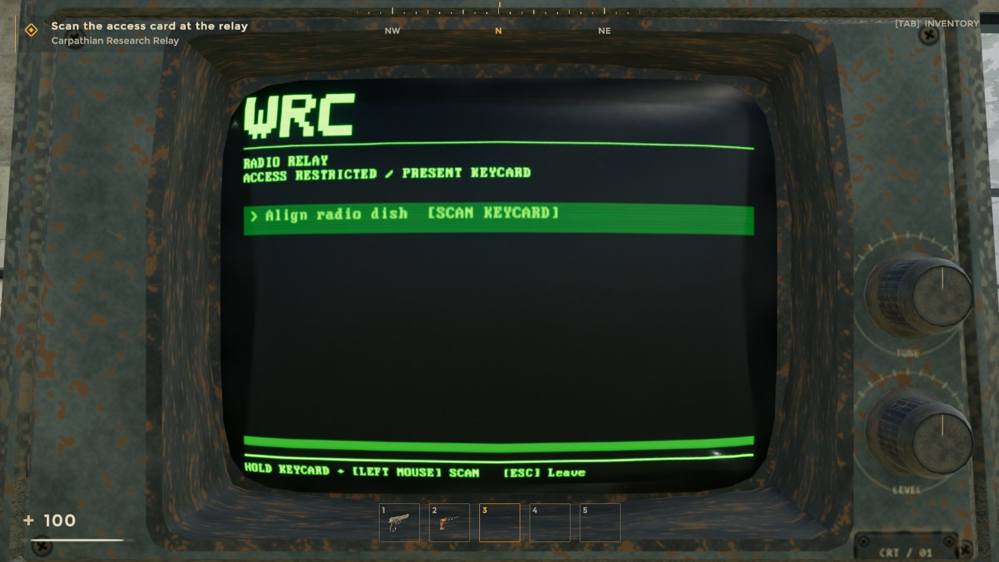
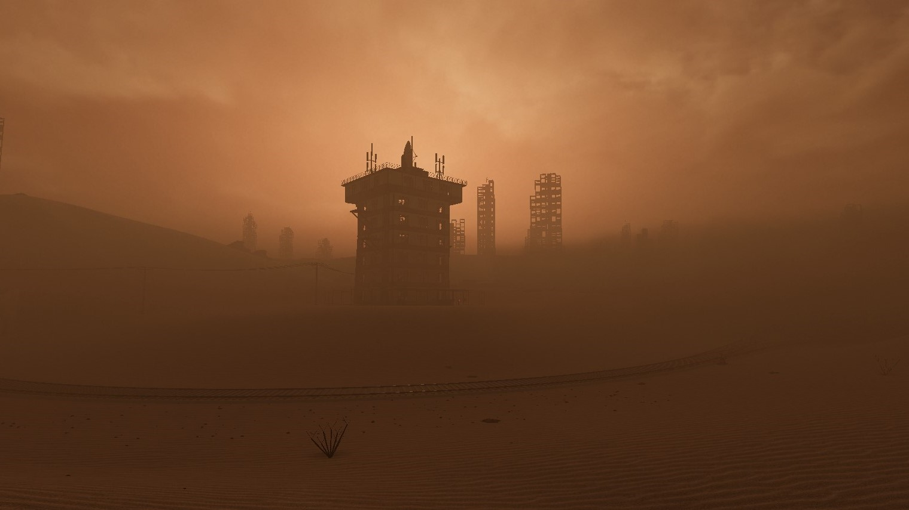

01 / Prepare
Start with a plan.
Choose the next mission at the Map Computer. Equip your team, coordinate shared supplies, and set a course together.

A cooperative expedition by Qubicode
Four scientists. One train.
A world still worth saving.
Travel through a world devastated by disease.
Bring your crew. Find the cure.
Humanity needs more than survivors.
A disease has brought the world to its knees. You and three other scientists set out by train with one purpose: find a cure.
Beyond the carriage, the world is hostile. Head into abandoned facilities, recover vital resources and biological samples, and make it back together. Every expedition is another step in a journey that depends on the whole crew.

The train is the heart of the journey.
Plan your next expedition, prepare your equipment, and turn what you recover into knowledge. Then head out again.
EXPEDITION SEQUENCE
A shared journey.
Every decision belongs to the crew.
Choose the next mission at the Map Computer. Equip your team, coordinate shared supplies, and set a course together.

Leave the armored carriage and explore on foot. Stay close, search for supplies, and work your way toward the objective.

Restore a signal relay, secure fuel, or recover a biological sample. Surviving the trip is only part of the mission.
Get the surviving crew aboard and close the train door. Analyze recovered samples at the Research Station and prepare for the next expedition.
A familiar world. An unfamiliar silence.
Rain against the carriage. Fog between the trees. A horizon disappearing into dust. The world sets the mood before you fire a shot.
Survival is a team effort.
Authenticate at the relay and defend its reboot. Keep the team nearby while the machinery draws attention.
Collect biological samples with the Sample Extractor. Back aboard, analyze them to build the crew’s understanding of the infected.
Connect the fuel depot’s systems, restore power, and protect the transfer. The next expedition needs more than courage.

As long as there’s a way forward,
there’s a reason to go.
See the world for yourself.
Seven moments from the game in development.
Select a frame to take a closer look.
The journey is in development.
We’re building Recovery Unit for PC. For publishing, press, and collaboration, talk to the team behind the train.
Contact Qubicode qubicode.team@gmail.com